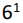
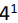

In the example given, Jordan and Street change fielding positions, moving to second base and shortstop respectively. This is how such an internal change is recorded.

These types of changes are simply a switch in the defensive positions of players, without anyone leaving the game and being replaced by another player.
ATTENTION: While the player’s name may be replaced with ditto marks (") the shirt number MUST ALWAYS be repeated.
|
In the example given, Jordan and Street change fielding positions, moving to second base and shortstop respectively. This is how such an internal change is recorded. |
|
A change in defensive position should be indicated by drawing a horizontal line in the opposing team’s score-sheet, above the square for the next batter, to indicate that the fielding positions change from that point on.
| At the same time, at the top, next to the inning number, the new
defensive positions should be indicated by writing the numbers of the changed positions with the superscript
1 (or 2, 3, etc. if there have been several changes in that position). This means that, from that moment on,
the defensive plays in which these two defensive players are involved will be noted not with numbers 4 and 6
but with the numbers
 and . |

|
ATTENTION: Note that offensive performances are always written on the same line, since the batting order does not change.
SUGGESTION: use the sheet of appendix 7 for an overview on paper of the different shirt numbers for each position.